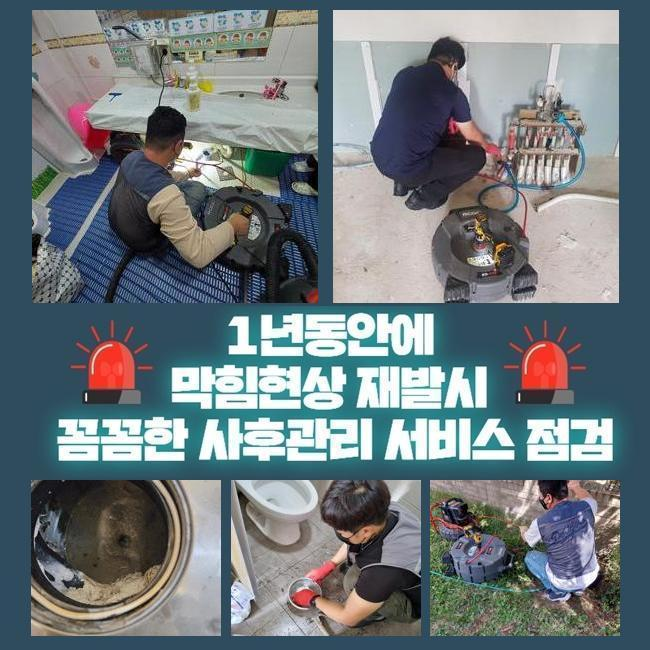
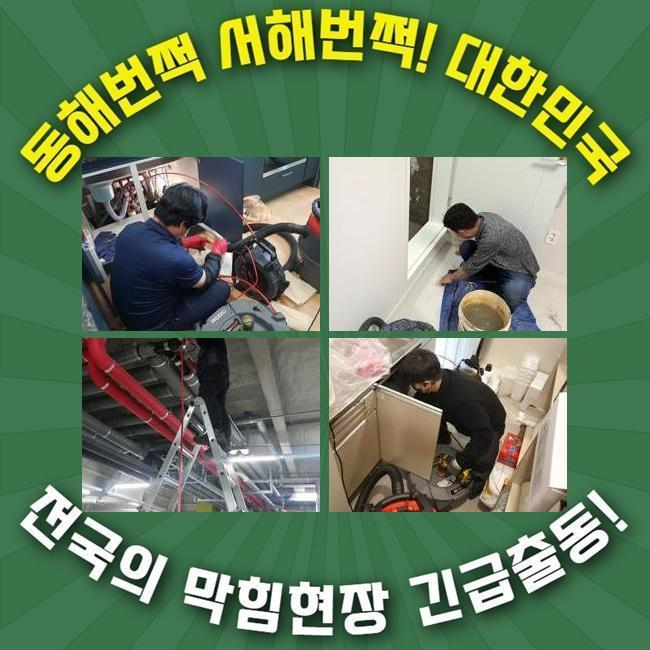
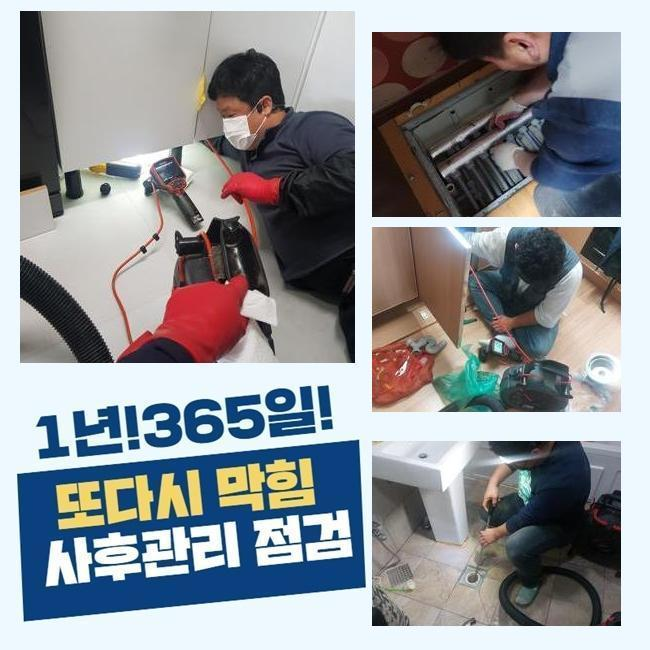
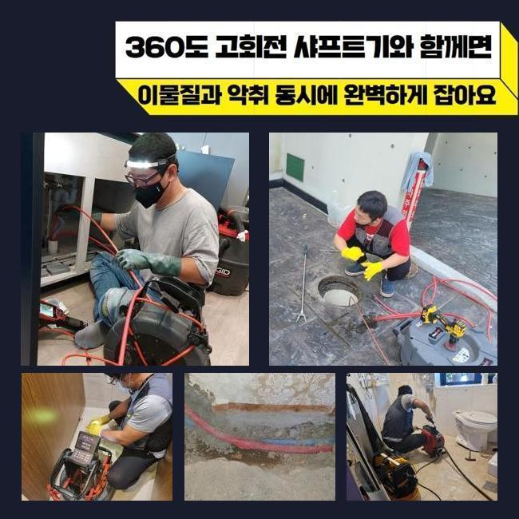
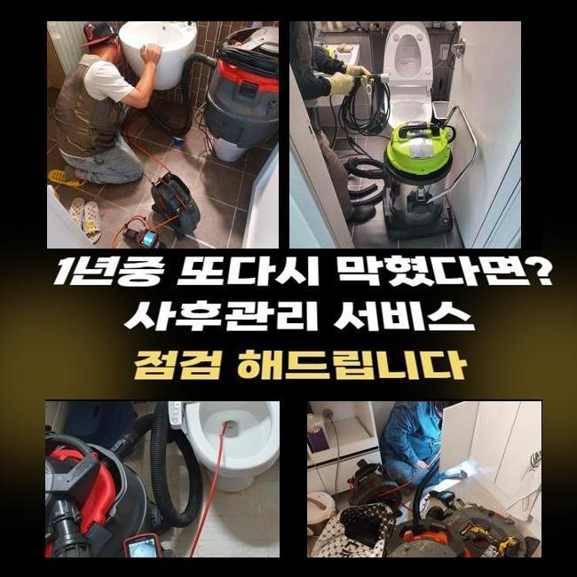
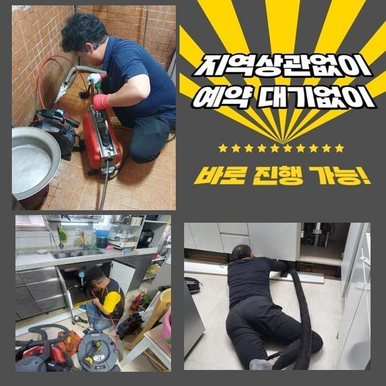
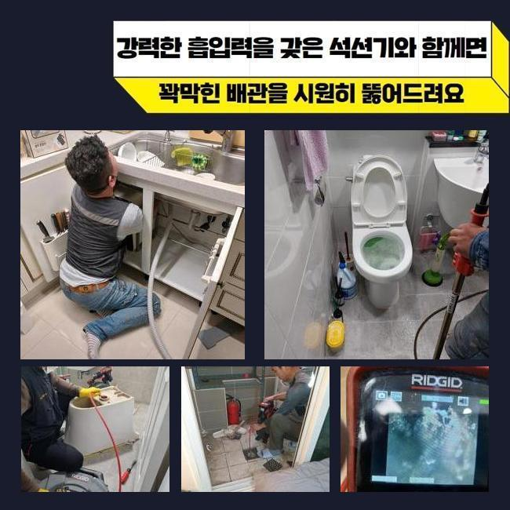

🏠 강서구 염창동변기뚫음 과해동 고압세척비용 배관막힘뚫는업체
용인 싱크대막힘 전문 시공 후기

📋 작업 개요
- 위치: 용인
- 서비스 유형: 싱크대막힘, 변기막힘, 하수구막힘, 배관막힘, 누수수리, 역류해결, 뚫는업체, 배관청소, 고압세척, 악취차단
- 작업 일시: 2025. 3. 2. 3:41
- 업체명: 하수구수사대 (010-5615-2118)
🔍 문제 상황
강서구 염창동변기뚫음 과해동 고압세척비용 배관막힘뚫는업체
하수 방출이 이뤄지지 않는다면 여러 측면의 어려움들을 느낄 수 있어요
일례로 하나의 주방 내의 싱크대가 이물질이 유입되어서 물길이 막혀버리는 경우도 있으며 변기설비나 바닥 배수구 세탁공간에 물이 차올라서 이용상의 문제점이 도래할 수 있는 부분입니다
공동주택 거주자에게서 방문해달라는 연락을 받으면 개별 배관이 막혔을 것이므로 집 안쪽에서 장비들을 써서 처리하고 있습니다
허나 메인 배관이라면 아파트의 경우라면 결함이 없는지 검토하기 위하여 정례적으로 배관을 닦아내기 때문에 여기가 다치는 것은 상대적으로 적습니다
반면에 상업용 건물은 하수관의 곤란이 일어날 가능성도 아파트와 비교해서는 높게 나타납니다
오늘 소개할 곳은 상가에 장착되어 있는 메인관로가 차단되어 건물 안 매장에 있는 설비를 못쓰게 돼서 빠른 개선이 필요하다며 연락을 해오셨습니다
무슨 일인지 들여다보니 오류가 있다는 게 감지된 중앙 파이프라인의 위치가 보여서 작업 실행에 옮겼습니다
메인관이 가로막힌다면 집들에 설치되어 있는 부속 배관의 결함으로 단정 짓기는 어려우며 너비가 넓은 메인관로에 훼손이 이루어졌거나 방해물질들이 곳곳에 껴서 하수 흐름이 끊어졌을 확률이 더 높은 편이에요

🔎 원인 분석
💡 전문가 진단: 정밀 진단 장비를 사용하여 슬러지의 고착 여부를 판명하고 타격/세척 작업을 실시했습니다.
굵은 줄기가 되는 관로부터 세정을 하고 규격이 더 축소된 파이프 내까지 정화합니다
천장 속에 설치된 수로 설비였으므로 사다리를 타고 올라가서 작업을 실시하기로 계획하고 차단된 하수구 설비의 복구에 이로운 장비를 키고 배치했습니다
가까운 곳을 정리해도 심층부 영역까지는 처치되지 못해서 메인배관을 수리할 시 가운데 부근까지도 제대로 뚫어내야 해요
파이프 커버를 개방하고 협소하다면 타공도 추가해서 업무를 이행할만한 활동 영역을 조성했어요
내시경 기기라는 카메라로 접근이 어려운 배관의 실황을 봐주기로 했습니다
내제된 오물의 양과 특정 구간에 막혀있을 사유가 뭔지를 장비 가동 직전에 평가해야 작업의 방향성을 설정할 수 있게 됩니다
메인관로가 다쳤다면 파이프의 사이즈가 대형에 속하기 때문에 소규모의 주거지에 활용하게 되는 단순한 석션기만으로는 처리가 안돼요
자바라 줄이 저 아래까지 배치되기 힘들기에 배출량도 감당이 안 됩니다
기름 물질을 잘게 분해해서 정화 작업을 효과적으로 도맡는 플렉스샤프트 장비 마찬가지로 오래 걸리며 작업부분 훼손도 불가피해서 어렵겠다 싶었네요

🔧 작업 과정
상가 내에서 활용하는 하수구 통수가 되지 못하면 빠른 세정에 들어가서 시스템 복구를 해줘야 합니다
넓은 구간에 적용되는 장비로 여기저기에 붙어있는 찌꺼기를 완전히 제거될 수 있게끔 시공해서 파이프 안을 새것처럼 닦아내야 자꾸 막히는 사건들을 처리해 낼 수 있습니다
이물들이 빼곡하게 찬 상태라면 작업에 착수하기가 그만큼 어려우므로 우선은 스프링 기기가 닿이는 봉인되어버린 파트를 풀리도록 건드려서 통로를 회복시킨 이후에 완성도 높은 수로 정비를 이어가기로 결정했어요
청소지점으로 장비를 내려보내려고 기름기가 빼곡한 지점에 전과는 다르게 개방된 공간을 만들어주었습니다
이번 작업장소인 상가는 여러 종류의 식당 매장들이 들어가 있었고 기름성질이 상당량 물과 함께 방출되다보니 하수관이 번들대는 기름이 코팅된 상황이었습니다
기름막은 뜨거운 물을 써도 수용성이 아니기 때문에 수분기가 마르면 석회성분이 돼서 찰싹 접착하게되는 장애물이 되고 맙니다
이렇게 되기 전에 관로 정비를 끝내지 못한 채 장기간 가만히 둔다면 일부 구간에서부터 규모가 더 확대되면서 이동이 불가하도록 꽉 메워져서 통수가 아예 되지 않을지도 모릅니다
이와 같은 유분막들을 싹 클렌징을 해주는 방법은 최신식 고압세척기의 기능 덕택에 간편한 투자로 오물이 정복한 배수관을 새것처럼 만들 수 있었네요
단단히 고착화된 슬러지가 수압의 타격으로 분리되어가는 모습을 내시경을 안으로 넣어서 봐가며 상황에 맞게 대처했습니다
꿈쩍하지 않을 듯 했던 방대한 양의 물질들이 자취를 감추기 시작했으며 소규모 크기의 입자만 떠다니는 상태로 보였습니다
일단 고압세척을 해야한다고 결정나면 현장마다 차이는 있겠지만 의심되는 장애요소가 있는 곳들을 전반적으로 씻어줘야 또다시 차단이 되는 등의 사태가 유발되지 않아요
통수를 방해해온 슬러지를 고압수를 통해 분해하고 배관 속에 들어가는 카메라로 다양한 구간들을 탐색하며 나아졌는지 조명해보았습니다
처음 방문했을 때는 말그대로 공백이 보이지 않을만큼 열악한 배관 환경이었지만 관통하는 기기를 돌리는 처리를 거쳤더니 전과 딴판으로 변화한 상쾌한 관로를 되찾을 수 있었어요
기능상으로도 완벽한지 검사하고자 물을 받아서 내려보면서 물이 걸림없이 나가는 완전히 차원이 달라진 성능을 면밀하게 검토한 이후에야 작업 끝을 알렸습니다


✅ 작업 완료
아까 장비를 배치하기 위해서 타공해준 홀들은 빈틈을 막아줄 전용필름으로 확실하게 보호하여 누수 상황이 벌어지지 않게 단도리를 해드렸습니다
이번 현장은 막힘건으로 수많은 컴플레인이 이어지던 상가빌딩 중의 매장 안에서 습한 물기가 고여만 갔고 싱크대 수돗물의 역류 증세도 도래했던 현장을 정리하고서 인사를 드렸습니다
사이즈가 남다른 배수로라면 혼자 수습하는게 불가능한 상황이니 급한 마음을 반영해서 자가조치를 무분별하게 취하다간 수도관이 균열이 가거나 부서지는 상황까지 악화될 수 있습니다
가정집도 그렇지만 규모가 큰 상가라도 올바른 원인 규명을 통해서 정상기능을 복구시켜드리니 안정적 설비의 이점을 누려보세요




⚠️ 베란다 누수 및 방수 관리 방법
- ✅ 비가 많이 올 때 창틀 주변이나 아래층 천장에 얼룩이 생기는지 정기적으로 확인해 보세요.
- ✅ 우수관 주변 실리콘 마감이 들뜨거나 깨진 틈새가 있는지 손상 여부를 수시로 체크하세요.
- ✅ 베란다 바닥 타일의 줄눈(메지)이 소실되면 그 틈으로 물이 침투하여 누수가 유발됩니다.
- ✅ 누수 의심 증상 발견 시 방치하면 아래층 손실이 커지므로 즉시 전문가의 진단을 받으십시오.
💡 핵심 정리
- 확실한 장비 작업(내시경 점검 및 샤프트 스케일링)으로 원인을 뿌리 뽑습니다.
- 작업 후 1년 이내에 동일한 부위 재발 시 100% 무상 A/S 서비스를 보장합니다.
- 서울 · 경기 · 인천 전 지역에 24시간 언제든 긴급 출동할 수 있도록 항시 대기 중입니다.
❓ 자주 묻는 질문 (FAQ)
🚨 용인 싱크대막힘 문제로 고민이신가요?
정확한 원인 진단과 확실한 시공으로 재발 없는 해결을 약속드립니다.
24시간 긴급 출동 | 서울 · 경기 · 인천 전지역 | 1년 내 재발 시 무상 A/S